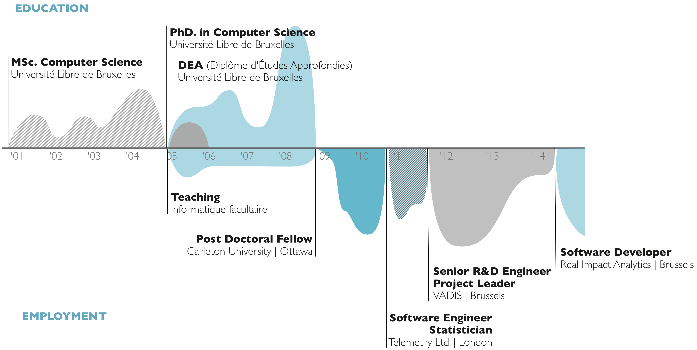
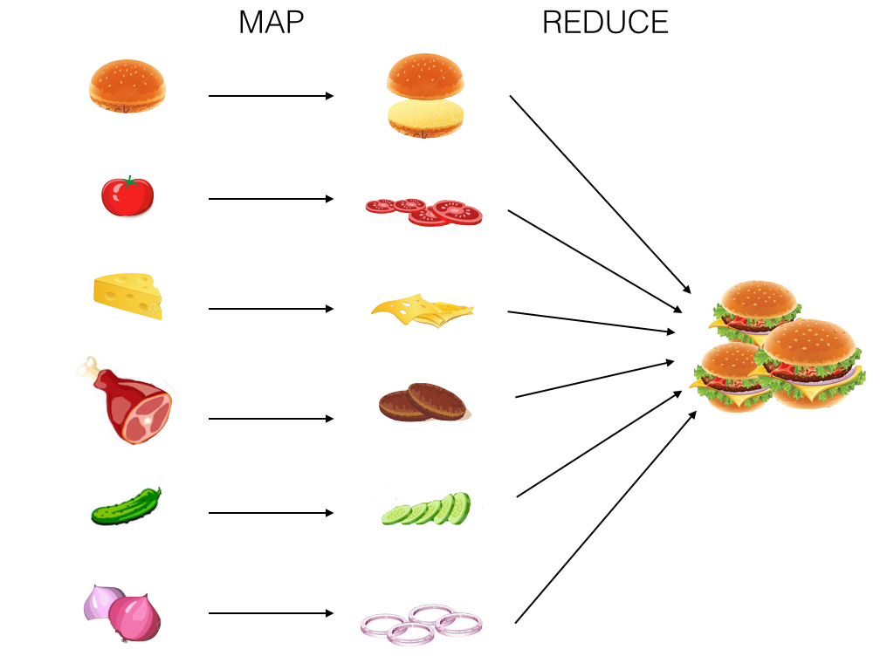
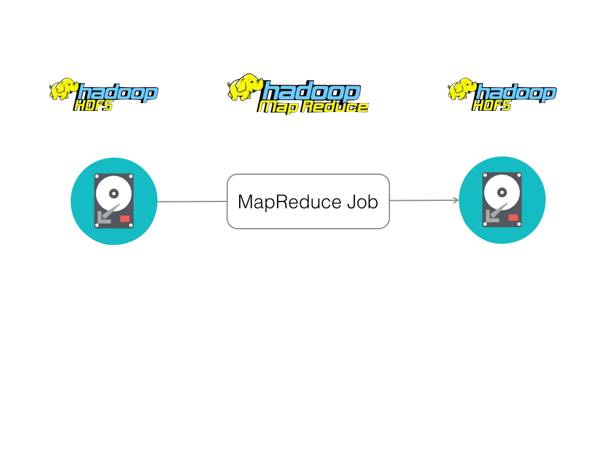
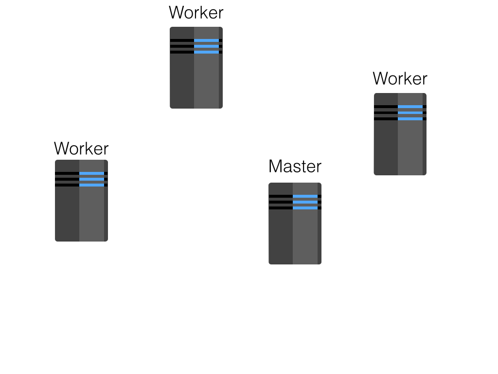
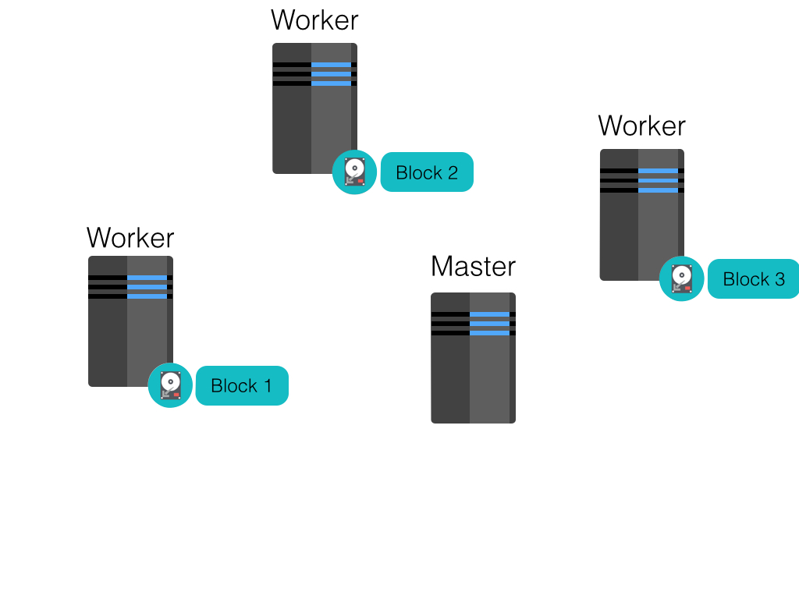
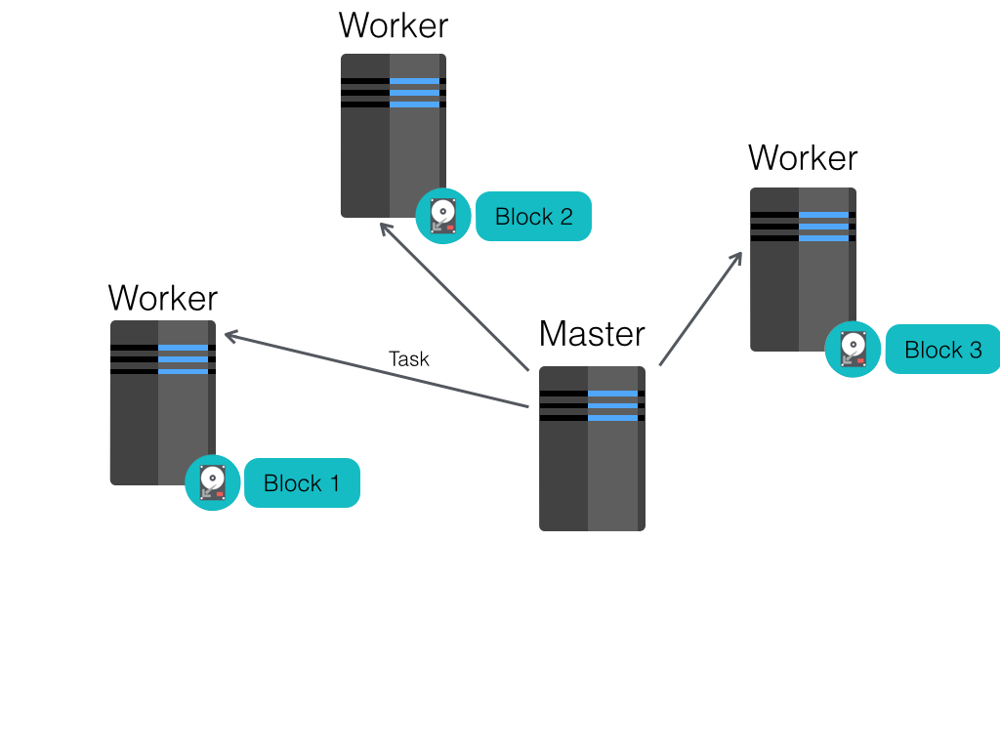
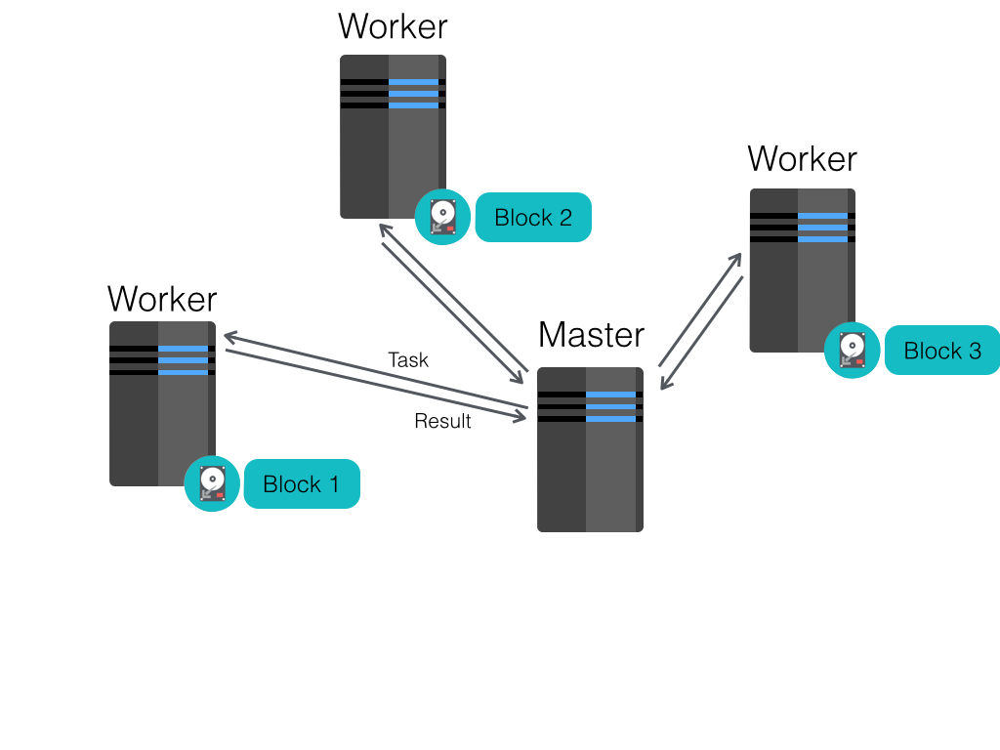
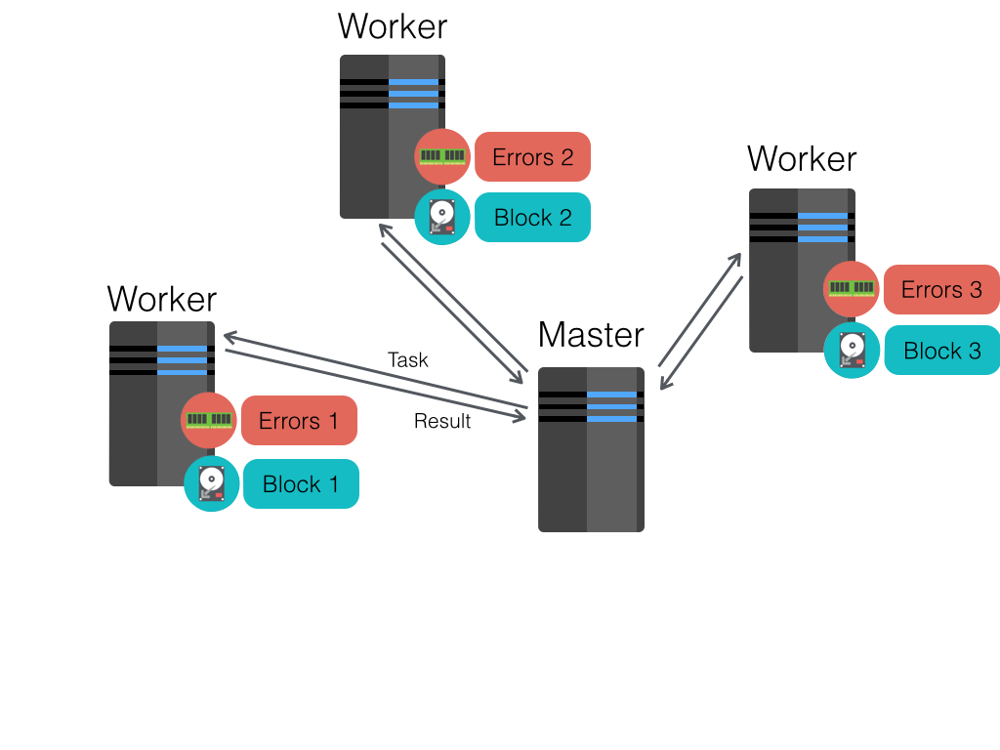

Big Data Stack
Real Impact Analytics
Karim Douïeb
Who am I?
Where do I work?
Missions
| Campaign managment | Operational optimization |
|---|---|
|
Improve marketing Strengthen subscriber acquisitions Acquire competitor market Increase cross-sales Reduce churn Target high value subscribers A/B test campaign messages Compute campaign's ROI |
Drive field actions Improve network coverage Performance tracking Stock management Managed services Data commercialization |
Data
| Call Detail Record (CDR) | |
| Date — Time — Duration | |
| Billing — Recharge — Money transfer | |
| Social Network | |
| Antenna's geolocalisation | |
| Network information | |
| Data usage — URL — App |
Treating telco/banking data of 300,000,000 subscribers daily
Active in 25+ countries
Is this a lot?
4.1% of world population
10% of africa's population
Still Room for growth
Spark
Map Reduce is like making burgers
MapReduce data sharing primitive
Restricted programming framework
“MapReduce tasks must be written as acyclic dataflow programs, i.e. a stateless mapper followed by a stateless reducer, that are executed by a batch job scheduler.
This paradigm makes repeated querying of datasets difficult and imposes limitations that are felt in fields such as machine learning, where iterative algorithms that revisit a single working set multiple times are the norm.”
— Zaharia, Chowdhury, Franklin, Shenker, Stoica
Resilient Distributed Dataset (RDD)
Restricted form of distributed shared memory:
- Immutable, partitioned data set.
- Can only be build through coarse-grained deterministic transformations (map, filter, join, …). These are operations that are applied to all of the elements of the data set at once.
Efficient fault recovery using lineage:
- Remember the graph of transformation applied to each RDD.
- When is lost simply recompute lost fragment of the execution graph.
| Transformations | Actions |
|---|---|
|
map filter flatMap join union distinct groupByKey aggregateByKey sortByKey cogroup sample intersection ... |
reduce collect count first take takeSample takeOrdered countByKey foreach saveAsParquetFile saveAsTextFile saveAsObjectFile ... |
Log Mining example
val file = spark.textFile("hdfs://...")
val errors = file.filter(line => line.contains("ERROR"))
errors.cache()
// Count errors mentioning MySQL
errors.filter(line => line.contains("MySQL")).count()
// Count errors mentioning Windows should be much faster
errors.filter(line => line.contains("Windows")).count()





Logistic Regression Example
val points = spark.textFile(...).map(parsePoint).cache()
var w = Vector.random(D) // current separating plane
for (i <- 1 to ITERATIONS) {
val gradient = points.map(p =>
(1 / (1 + exp(-p.y*(w dot p.x))) - 1) * p.y * p.x
).reduce(_ + _)
w -= gradient
}
println("Final separating plane: " + w)

Spark Ecosystem

Spark Drawback
- Lack of maturity
- Sometimes less efficient then specialized system
- Difficult to debug
- lazyness & optimisation
- limited monitoring tools
Big Data Real Impact Analytics
- Basic usage statistic
- Social communities detection
- Mobility pattern
- Behavior prediction
- Recharge frequency
- Anomaly detection
- KPIs GeoMapping
Leveraging anonymized telecom data to fight the Ebola outbreak
4 key actors
- Mobile Network Operators
- Health actors
- Analytics experts
- Regulators
Objectives
- Set-up and secure a system for collecting telecom and public health data
- Analyse mobility paterns and develop epidemiological models to simulate the potential spread paths of the disease
- Build a platform/tools allowing identification of priority locations for action